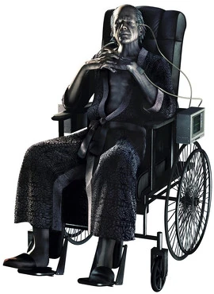
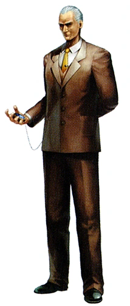
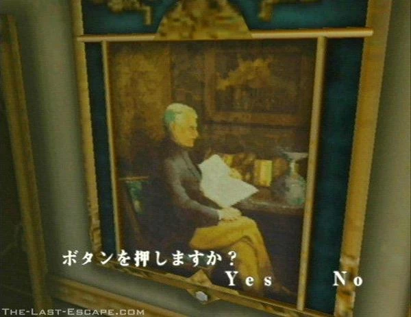

Historia
La Corporación Umbrella (Umbrella Corporation en inglés) es una empresa dentro de la saga de videojuegos Resident Evil. En la trama del juego, es una empresa multinacional, que tiene base en Estados Unidos, pero que ha logrado un gran crecimiento a nivel mundial.
En las películas de Resident Evil, originalmente se dedicaba a la producción de medicamentos, pero más adelante comenzó a desarrollar sus actividades, principalmente computación y sistemas de salud e ingeniería genética, pero también se dedicaba a desarrollar proyectos maquiavélicos como, por ejemplo, la creación de armamento biológico especializado o la experimentación sobre el genoma humano. En cambio, en los videojuegos, fue creada como cortina de humo para investigaciones biológicas.
Oringen
Umbrella surgió a partir de fines de la década de los años 60, con el descubrimiento del virus Progenitor que más tarde daría origen al virus-T por parte de un miembro de la familia Ashford. Más tarde, se conformó en los años 60 como una multinacional independiente del gobierno de Estados Unidos. Oswell creó el logotipo de la compañía inspirándose en el símbolo del culto de la Madre Miranda a quien conoció en su juventud y quién le enseñó sus conocimientos en genética.
Originalmente fundada por Oswell E. Spencer, Edward Ashford y James Marcus como una tapadera para propósitos militares, Umbrella Corporation fue una empresa que se dedicaba a la elaboración de drogas simples y experimentos básicos para la mejora de la salud pública.



Edward y Oswell (dueño de la mansión Spencer en las montañas Arklay, en Raccoon City) fueron los creadores del virus Progenitor, también conocido como virus Madre. Con el tiempo, Marcus consiguió crear una nueva cepa del virus denominada «T», nombrada así por ser su nombre real Tyrant Virus.
Con el virus-T, la experimentación comenzó a dar sus frutos. Al pasar el tiempo, las diferencias entre las familias Ashford y Spencer fueron creciendo cada vez más, hasta llegar a tal punto que Spencer comenzó a generar nuevos experimentos sobre el virus-T dejando de lado a los miembros de la familia Ashford. Uno de sus experimentos más conocidos fue el proyecto Arklay, pero perdió el control y terminó afectando gravemente a Raccoon City.
En las continuas experimentaciones de Umbrella se lograron diferentes versiones del virus-T, entre ellas una llamada «T-N», también conocida como Tyrant-Nemesis.
La corporación crecía a pasos agigantados. Lograron tanto poder que llegaron a formar sus propias fuerzas de seguridad.